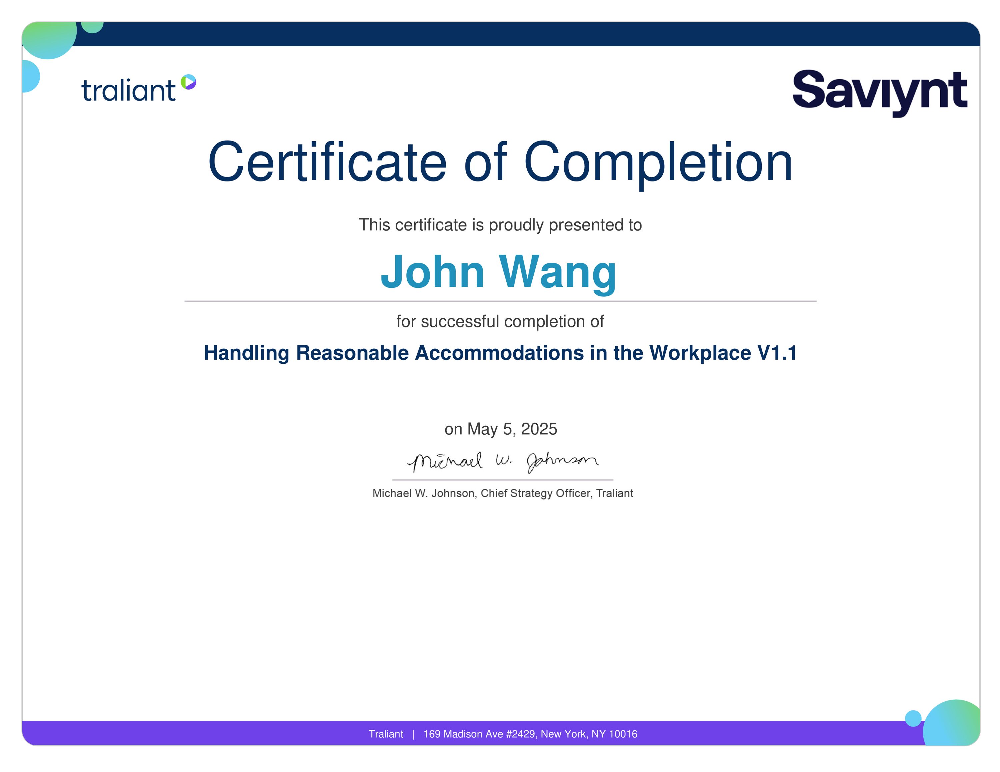

- »
- Certificates »
- Human Resources (12)
-
John's Human Resources Certificates
- Compliance
- Preventing Workplace Harassment - Advanced Office (CPE/CLE) ML from Traliant
- Avoiding Conflicts of Interest from Traliant
- Handling Reasonable Accommodations in the Workplace from Traliant
- Handling Reasonable Accommodations in the Workplace (2024) from Traliant
- Diversity, Equity, and Inclusion (DEI)
- Creating Inclusive Workspaces from Traliant
- LGBTQ+ Inclusion from Traliant
- Unconscious Bias, Diversity, Equity, and Inclusion - Managers from Traliant
- Workplace Safety
- Bystander Intervention from Traliant
- Preventing Discrimination and Harassment - CA Managers from Traliant
- Responding to Complaints from Traliant
- Responding to Complaints (2024) from Traliant
- Workplace Violence Prevention (California) from Traliant
Compliance (4)
Preventing Workplace Harassment - Advanced Office (CPE/CLE) ML from Traliant

Avoiding Conflicts of Interest from Traliant

Handling Reasonable Accommodations in the Workplace from Traliant

Handling Reasonable Accommodations in the Workplace (2024) from Traliant
Diversity, Equity, and Inclusion (DEI) (3)
Creating Inclusive Workspaces from Traliant

LGBTQ+ Inclusion from Traliant

Unconscious Bias, Diversity, Equity, and Inclusion - Managers from Traliant
Workplace Safety (5)
Bystander Intervention from Traliant
Preventing Discrimination and Harassment - CA Managers from Traliant
Responding to Complaints from Traliant
Responding to Complaints (2024) from Traliant

Workplace Violence Prevention (California) from Traliant